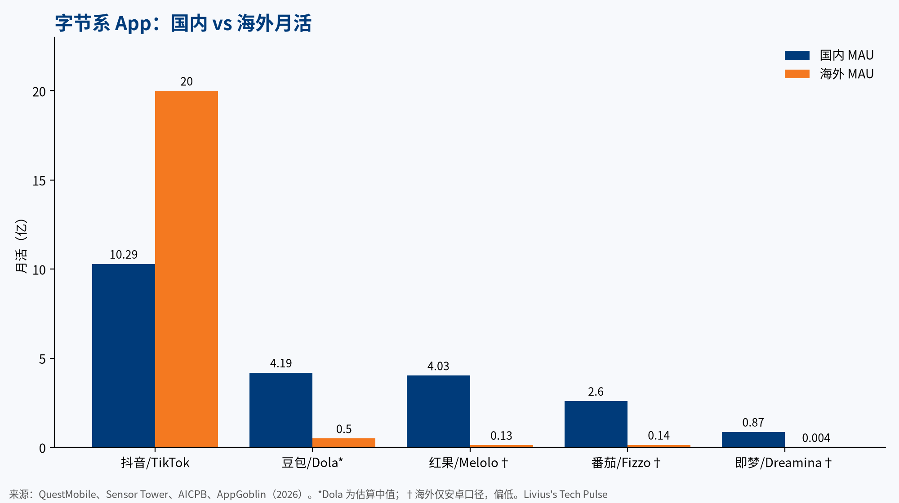
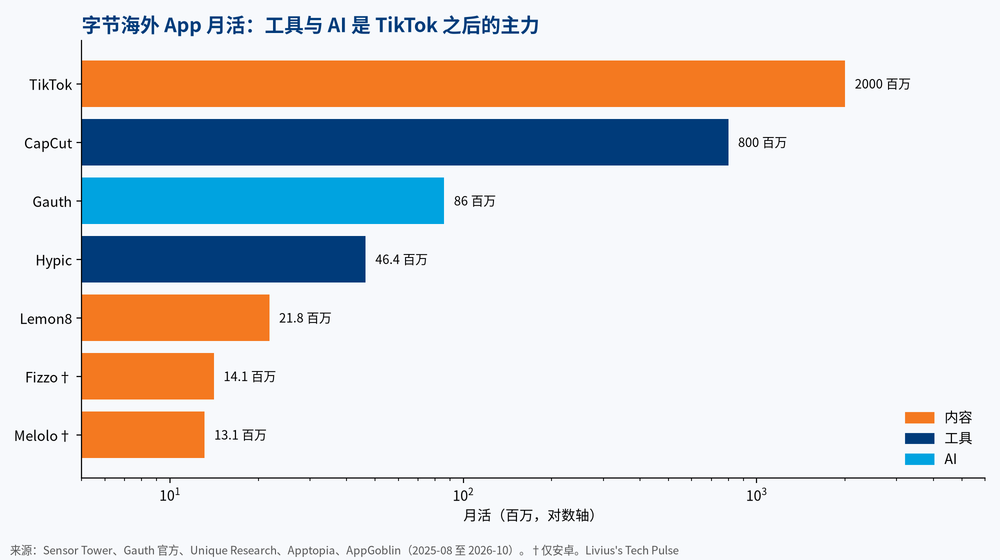

把字节在国内的 App 和它们的海外"兄弟"放到同一张表里，会看到一个反直觉的结果：海外最成功的除了 TikTok，不是内容产品，而是工具。剪映的海外版 CapCut 月活已超过 8 亿；而把国内做到上亿日活的短剧、小说、资讯、音乐搬出去，要么只有千万级用户，要么已经关停。
这篇文章用 2026 年最新的公开数据梳理这个格局。所有数字都标了来源；标"估"的是推算，不是披露数据。
一、国内：抖音之外，还有四个亿级日活
国内基本盘仍然惊人：
- 抖音：2026 年 7 月日活 7.14 亿，同比 +19%；6 月月活 10.29 亿（野村引 QuestMobile，华尔街见闻；youcloud 报告）。置信度：中。
- 豆包：截至 2026 年 9 月 30 日，日活 1.81 亿，月活 4.19 亿（QuestMobile Q3 AI 报告）。置信度：高。
- 红果短剧：2026 年 7 月日活 1.68 亿，同比 +107%；7–8 月月活 4.03 亿（同上，华尔街见闻）。
- 番茄小说：7 月日活 1.44 亿；6 月月活 2.6 亿（界面新闻）。
腰部产品同样在长：汽水音乐 6 月月活约 1.67 亿；番茄音乐 2 月月活 5169 万，同比 +92.6%（澎湃）；即梦 App 6 月月活 8736 万（AICPB）；本地生活新品抖省省 4 月 18 日日活 1087 万（界面新闻）。
剪映、火山版、悟空浏览器等产品，没有找到 2026 年可靠的公开数据，本文不引用。

二、海外：TikTok 和 CapCut 是两座高峰
- TikTok：Sensor Tower 数据显示，2026 年一季度全球月活首次突破 20 亿（IT之家）。TikTok 不公布日活，第三方估算在 10–11.2 亿之间（Axis Intelligence），置信度低。
- CapCut：2026 年 4 月全球移动端月活超过 8 亿（Sensor Tower，转引自 上海저널）；官方 9 月称用户超 6.6 亿，覆盖 170+ 市场（CapCut Newsroom）。
两个口径不完全一致，但量级都在数亿。CapCut 的海外规模，大概率已经超过国内的剪映。
三、内容出海：除了 TikTok，都很难
对比国内亿级的内容产品，它们的海外对应版本差距悬殊：
| 国内 | 国内规模 | 海外对应 | 海外规模 |
|---|---|---|---|
| 红果短剧 | 日活 1.68 亿 | Melolo | 月活约 1310 万（仅安卓，AppGoblin） |
| 番茄小说 | 日活 1.44 亿 | Fizzo | 月活约 1410 万（仅安卓，AppGoblin） |
| 今日头条 | 月活 3–6 亿区间 | TopBuzz | 2020 年关停（路透） |
| 汽水音乐 | 月活约 1.67 亿 | TikTok Music | 2024 年 11 月关停（TechCrunch） |
AppGoblin 只统计安卓，会低估；即便如此，差距仍是一到两个数量级。原因不难理解：内容产品依赖本地化供给、版权和支付习惯，字节在国内的"抖音导流 + 番茄 IP 库 + 广告变现"闭环，到海外无法整体复制。短剧赛道在海外也已高度拥挤，Sensor Tower 显示 2026 年一季度 Top 10 短剧 App 月活都在约 4000 万量级，没有绝对龙头。
四、工具和 AI：第二曲线

TikTok 之后，字节海外的主力几乎都是工具和 AI：
- Gauth（作业与学习 AI）：官方称月活 8600 万，注册用户 3 亿（2026 年 10 月，来源）。置信度：中。
- Hypic（醒图海外版）：2025 年 8 月月活约 4640 万（Unique Research），2026 年一季度下载量超 3300 万次。
- Dola（原 Cici，豆包海外版）：2025 年底日活破 1000 万，2026 年 3 月日均约 1200 万（Sensor Tower，网易转载）。
工具和 AI 为什么更容易出海？它们解决的是通用需求：剪视频、修图、解题、问答，语言和文化壁垒低，靠模型和算法能力就能取胜。而且，它们与 TikTok 形成了天然的创作链路：TikTok 带来需求，CapCut 和 Hypic 完成生产。
但 AI 助手仍处于早期。豆包国内日活 1.81 亿，Dola 约 1200 万，相差约 15 倍。海外有 ChatGPT（9 月移动端日活约 6.64 亿，Sensor Tower 经美银转引）和 Gemini 这样的强敌，Dola 的突破口更可能在东南亚、拉美等新兴市场。
五、对东南亚市场的观察
几个公开信号值得关注：Dola 在印尼、马来西亚、墨西哥一度进入下载榜前列；Melolo 和 FreeReels 等短剧应用的增长主要来自东南亚、印度和拉美；TikTok Shop 2025 年活跃消费者达 4 亿（KrASIA 引界面），其中东南亚是成熟市场。对东南亚来说，"内容 + 工具 + 电商 + AI 助手"的字节式矩阵正在逐步成形，而背后是对推理算力的持续需求。
结论
- 工具出海强：CapCut 月活 8 亿+，Gauth、Hypic 均在数千万级。
- 内容出海弱：除 TikTok 外，短剧、小说只有千万级，资讯和音乐已经关停。
- AI 是第二曲线：豆包国内已是亿级日活，海外 Dola 仍有约 15 倍的差距，空间和挑战都在。
口径说明：QuestMobile、Sensor Tower、AICPB、AppGoblin 统计方法不同，跨行比较只看量级。文中"估"值按 MAU × 同类 DAU/MAU 比推算（工具、AI 0.2–0.3），不是披露数据。本文仅作行业观察，不构成任何投资建议。